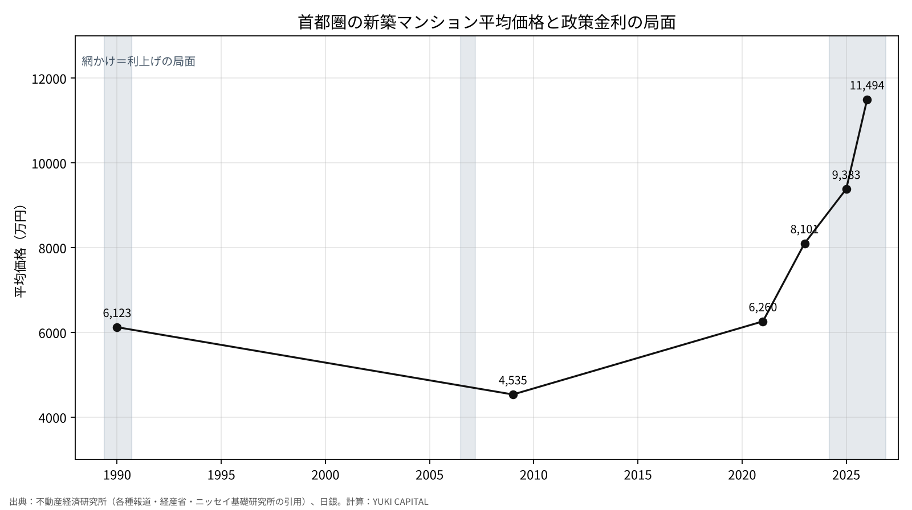
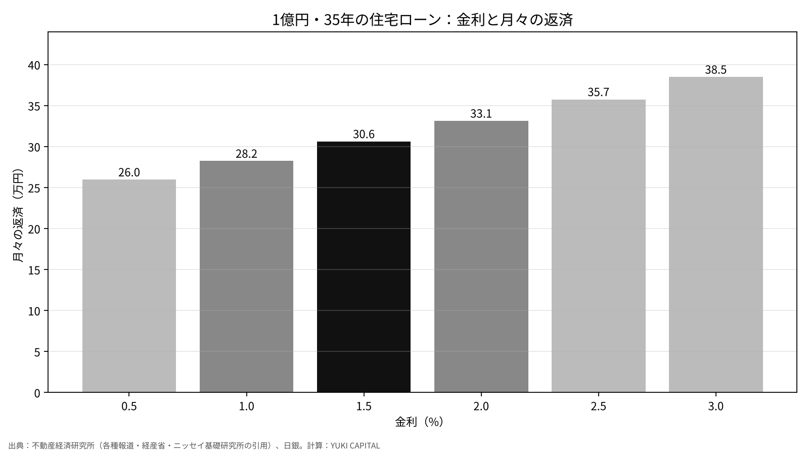

日銀が12月に1.5%へ上げたら、東京のマンション価格はどう動くか――1990年・2006年・2024年以降の利上げを、不動産経済研究所と国交省のデータで検証
日銀は12月17〜18日の金融政策決定会合で、政策金利を1.25%から1.5%へ上げるかを判断する。市場では、上げるとの見方が多い。
一方、東京23区の新築マンションの平均価格は、2025年度に1億3,784万円と過去最高を更新した。10月は前年同月比15.5%安の1億2,937万円と、4か月ぶりに下がった。
本稿の問いは、日本の過去の利上げ局面で、首都圏のマンション価格はどれだけ遅れて、どれだけ動いたのか、そして1.5%への利上げは買う人の月々の返済をどれだけ変えるのか、である。

- 過去3回の利上げ局面のうち、価格が大きく下がったのは1990年の1回だけである。このときは公定歩合が2.5%から6.0%へ、3.5ポイント上がり、銀行の不動産融資の総量規制が重なった。
- 2006〜2007年の0.5%までの利上げと、2024年以降の1.25%までの利上げでは、首都圏の新築マンション価格は下がらず、むしろ上がった。上げ幅が小さく、建築費と都心の需要が価格を支えたと見られる。
- 返済の面では、1億円を35年で借りる場合、金利が1.0%から1.5%に上がると、月々の返済は約28.2万円から約30.6万円へ、約8.5%増える。同じ月30万円の返済で借りられる額は、約1億628万円から約9,798万円へ減る。
問いと背景
ここでいう「政策金利」は、日銀が誘導する短期の金利を指す。1990年代までは「公定歩合」、いまは無担保コール翌日物の誘導目標がその役を担う。住宅ローンの変動金利は、この短期の金利に連動しやすい。
日銀は2024年3月にマイナス金利をやめ、2025年12月に0.75%、2026年6月に1.0%、9月に1.25%へ上げた。10月の会合では1.25%に据え置いたが、基調的な物価上昇率は2%の目標と「おおむね整合的」と判断した。
市場では、11月20日時点で12月の0.25ポイントの利上げを約84.7%織り込む集計がある。政策委員の間では、景気を熱しも冷ましもしない中立金利が1.1%から2.5%のどこにあるかで、見方が割れている。1.5%で止まるのか、2%まで続くのかで、住宅ローンの金利の行き先も変わる。
価格の物差しには2つを使う。1つは不動産経済研究所の首都圏新築分譲マンションの平均価格で、1973年から続く。もう1つは国交省の不動産価格指数（2010年平均＝100）で、中古を含むマンションの取引価格を指数にしたものである。
データと方法
新築マンションの平均価格は、不動産経済研究所の公表値と、それを引用した経済産業省・ニッセイ基礎研究所の資料から取った。1990年は6,123万円、2009年は4,535万円、2021年は6,260万円、2023年は8,101万円である。
金利の局面は、内閣府の経済白書、財務省の財政史、日銀の資料で確かめた。1989年5月から1990年8月に公定歩合は2.5%から6.0%へ上がった。1991年7月から引き下げに転じている。
感度分析では、元利均等返済の式で、1億円を35年（420回）で借りた場合の月々の返済を、金利0.5%から3.0%まで6通りで計算した。同じ月30万円の返済で借りられる上限も、逆算で出した。
結果
| 局面 | 政策金利の動き | 首都圏の新築マンション価格 | その後 |
|---|---|---|---|
| 1989〜1990年 | 公定歩合2.5%→6.0%（＋3.5pt） | 1990年6,123万円（当時の最高） | 1992年1月の公示地価は前年比4.6%低下。23区の新築は2002年に4,003万円まで下落 |
| 2006〜2007年 | 0%→0.5%（＋0.5pt） | 上昇基調、2009年に4,535万円 | リーマン・ショック後に下落し、利上げの影響と分けにくい |
| 2024〜2026年 | −0.1%→1.25%（＋1.35pt） | 2023年8,101万円→2026年度上期1億1,494万円 | 2026年10月の23区は前年同月比15.5%安 |

1990年の局面では、利上げが始まってから約2年後に地価の下落がはっきりした。1992年1月の公示地価は前年比4.6%低下と、1975年以来のマイナスになった。株価は1989年末の38,915円から約60%下げた。
2024年以降の局面では、政策金利が1.35ポイント上がる間に、首都圏の新築価格は1億円台に乗った。国交省のマンションの価格指数も、2025年12月に225.1と、2010年の2.25倍まで上がっている。
2006〜2007年の局面は、利上げ幅が0.5ポイントと小さかった。価格の流れを変えたのは、2008年のリーマン・ショックによる世界の金融の混乱だった。利上げだけの効果を、この局面から取り出すのは難しい。
年収と返済で見たときの重さ
価格の高さは、年収と返済の2つで見ると、見え方が変わる。ニッセイ基礎研究所の試算では、首都圏の新築マンションの年収倍率は、2021年に10.53倍と、1990年の9.34倍を超えた。
一方で、同じ研究所は、2023年のローンの返済額はバブル期の8割にとどまると試算している。1990年の住宅ローンの金利は今よりずっと高く、価格は今より安くても、月々の返済は重かった。
つまり、今の価格の高さは、低い金利に支えられている面が大きい。金利が上がれば、価格が同じでも返済は重くなり、買える人が減る。利上げが価格に効く道は、この返済の重さを通る。
感度分析
| 金利 | 1億円・35年の月々の返済 | 総返済額 | 月30万円で借りられる上限 |
|---|---|---|---|
| 0.5% | 約26.0万円 | 約1億903万円 | 約1億1,557万円 |
| 1.0% | 約28.2万円 | 約1億1,856万円 | 約1億628万円 |
| 1.5% | 約30.6万円 | 約1億2,860万円 | 約9,798万円 |
| 2.0% | 約33.1万円 | 約1億3,913万円 | 約9,056万円 |
| 2.5% | 約35.7万円 | 約1億5,015万円 | 約8,392万円 |
| 3.0% | 約38.5万円 | 約1億6,164万円 | 約7,795万円 |

金利が0.5ポイント上がるごとに、同じ返済で借りられる額は約7〜8%ずつ減る。1.0%から1.5%への利上げで、借りられる上限は約830万円減る。変動金利で借りている人には、この差が数年かけて返済額に表れる。2.0%まで上がれば、1億円・35年の月々の返済は約33.1万円になり、1.0%のときより約4.9万円重い。総返済額の差は、約2,057万円に広がる。
ただし、価格を決めるのは借りる人だけではない。都心の高額物件は、現金で買う人や海外の投資家の比率が高いとされ、ローンの金利が効きにくい。金利の影響は、借りて買う人が多い郊外や中古から先に出る可能性がある。
考察
反対の見方として、利上げは景気と賃金がよい証拠であり、価格はむしろ支えられるという考えがある。実際、2024年以降の利上げの間も価格は上がり続けた。建築費と人手不足が新築の供給を減らし、価格を押し上げてきた面も大きい。
もう1つの反対の見方は、円安が続く限り、海外から見た東京の不動産は割安に映り、買いが続くというものである。ドル円は158円台にあり、ドルを持つ買い手には、東京の1億円は約63万ドルになる。日本の利上げで円高に振れれば、この割安感は薄れる。
限界も3つある。1つ目に、新築の平均価格は、その月に売られた物件の場所と大きさで大きく動く。2026年10月の15.5%安も、都心の高額物件が出なかったことが主因とされる。2つ目に、過去3回はいずれも状況が違い、1990年は総量規制という強い融資の制限が重なっていた。3つ目に、1.5%の後にどこまで上がるかは、日銀の中でも見方が分かれている。
答え合わせの基準は、国交省の不動産価格指数のマンションが、前年同月比でマイナスに転じるかどうかである。新築の平均より、中古を含む指数の方が物件の構成に左右されにくい。
結論
過去の日本で、利上げが住宅価格を大きく下げたのは、3.5ポイントの急な引き締めと融資の総量規制が重なった1990年だけだった。1.25%から1.5%への0.25ポイントは、それに比べてずっと小さい。
それでも、借りて買う人の返済は確実に重くなる。1億円・35年なら、月に約2.4万円、総額で約1,000万円の差になる。価格が下がるかどうかより先に、同じ返済で買える家が小さくなることを数字で見ておきたい。価格の答えは国交省の指数で、返済の答えは自分の家計の数字で確かめるのがよいと思う。
僕はこう見ている
僕は12月に利上げがあると見ている。日米の金利差が縮まらない限り円安になることが、今年1年で証明されたと思うからだ。
僕自身は、継いだ不動産のうち1物件を売り、借金をゼロにして銀行株へ資本を移した。今は借り入れが無いので、利上げで負担は増えない。家を買う人には、今は変動金利の長期ローンで急いで買うより、価格が下がるところまで様子を見て、お金を貯めたりほかで運用したりしてもいいと思っている。
出典
- 不動産経済研究所「首都圏 新築分譲マンション市場動向」（共同通信 2026年11月19日） https://kumanichi.com/articles/2059658
- 不動産経済研究所 2026年度上半期の首都圏新築マンション（共同通信 2026年10月20日） https://www.kanaloco.jp/news/economy/article-1313865.html
- 経済産業省「新築分譲マンションの価格高騰」（2024年12月12日） https://www.meti.go.jp/statistics/toppage/report/minikaisetsu/hitokoto_kako/20241212hitokoto.html
- ニッセイ基礎研究所「バブル期より３割高くなった首都圏新築分譲マンション価格」（2024年1月31日） https://www.nli-research.co.jp/files/topics/77402_ext_18_0.pdf?site=nli
- 内閣府「平成3年度 経済白書 金融」 https://www5.cao.go.jp/keizai3/keizaiwp/wp-je91/wp-je91-s0024.html
- 内閣府「平成4年度 経済白書 資産価格下落の影響」 https://www5.cao.go.jp/keizai3/keizaiwp/wp-je92/wp-je92-00106.html
- 財務省 財務総合政策研究所「平成財政史」 https://www.mof.go.jp/pri/publication/policy_history/series/h1-12/6_1_1.pdf
- 国土交通省「不動産価格指数（令和7年12月分）」（2026年3月31日） https://www.mlit.go.jp/report/press/tochi_fudousan_kensetsugyo05_hh_000001_00256.html
- 日本銀行 植田総裁「通貨及び金融の調節に関する報告書 概要説明」（2026年11月19日） https://www.boj.or.jp/mopo/diet/d_state/data/dst261119a.pdf
- 共同通信「次回利上げ『できる時に実施』」（2026年11月10日） https://kumanichi.com/articles/2056048
図はYUKI CAPITALが作成。写真：Joshua Griffiths（Unsplash）
日々の数字と判断は、Xで記録している。